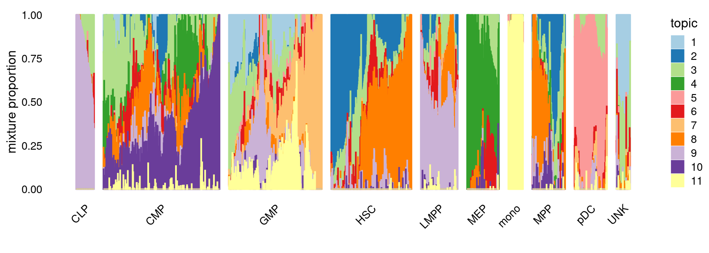
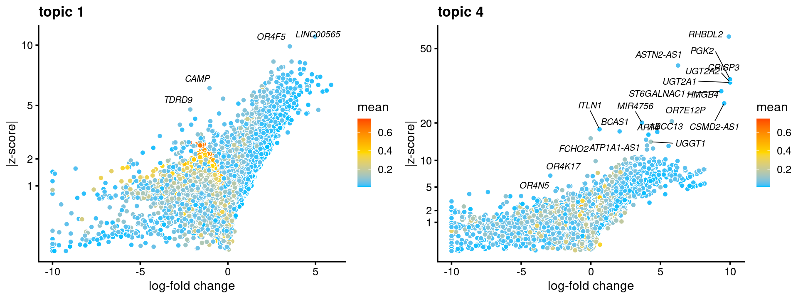
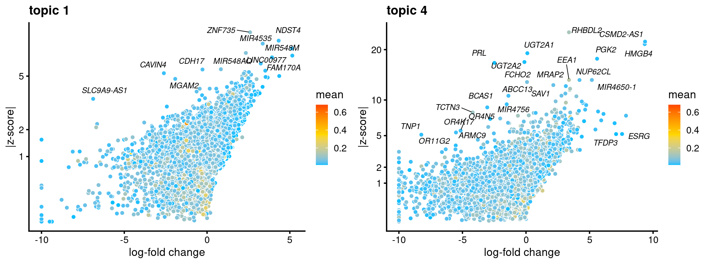

Last updated: 2021-02-05
Checks: 7 0
Knit directory: scATACseq-topics/
This reproducible R Markdown analysis was created with workflowr (version 1.6.2). The Checks tab describes the reproducibility checks that were applied when the results were created. The Past versions tab lists the development history.
Great! Since the R Markdown file has been committed to the Git repository, you know the exact version of the code that produced these results.
Great job! The global environment was empty. Objects defined in the global environment can affect the analysis in your R Markdown file in unknown ways. For reproduciblity it's best to always run the code in an empty environment.
The command set.seed(20200729) was run prior to running the code in the R Markdown file. Setting a seed ensures that any results that rely on randomness, e.g. subsampling or permutations, are reproducible.
Great job! Recording the operating system, R version, and package versions is critical for reproducibility.
Nice! There were no cached chunks for this analysis, so you can be confident that you successfully produced the results during this run.
Great job! Using relative paths to the files within your workflowr project makes it easier to run your code on other machines.
Great! You are using Git for version control. Tracking code development and connecting the code version to the results is critical for reproducibility.
The results in this page were generated with repository version be3c653. See the Past versions tab to see a history of the changes made to the R Markdown and HTML files.
Note that you need to be careful to ensure that all relevant files for the analysis have been committed to Git prior to generating the results (you can use wflow_publish or wflow_git_commit). workflowr only checks the R Markdown file, but you know if there are other scripts or data files that it depends on. Below is the status of the Git repository when the results were generated:
Ignored files:
Ignored: .Rhistory
Ignored: .Rproj.user/
Ignored: output/plotly/Buenrostro_2018_Chen2019pipeline/
Untracked files:
Untracked: analysis/process_data_Buenrostro2018_Chen2019.Rmd
Untracked: output/clustering-Cusanovich2018.rds
Untracked: output/plotly/Cusanovich2018/gsea_topic_10_genebody-sum_files/crosstalk-1.1.1/
Untracked: output/plotly/Cusanovich2018/gsea_topic_10_genebody-sum_files/jquery-3.5.1/
Untracked: output/plotly/Cusanovich2018/gsea_topic_10_genebody-sum_files/plotly-binding-4.9.3/
Untracked: output/plotly/Cusanovich2018/gsea_topic_10_genebody-sum_files/plotly-htmlwidgets-css-1.57.1/
Untracked: output/plotly/Cusanovich2018/gsea_topic_10_genebody-sum_files/plotly-main-1.57.1/
Untracked: output/plotly/Cusanovich2018/gsea_topic_10_tss-sum_files/crosstalk-1.1.1/
Untracked: output/plotly/Cusanovich2018/gsea_topic_10_tss-sum_files/jquery-3.5.1/
Untracked: output/plotly/Cusanovich2018/gsea_topic_10_tss-sum_files/plotly-binding-4.9.3/
Untracked: output/plotly/Cusanovich2018/gsea_topic_10_tss-sum_files/plotly-htmlwidgets-css-1.57.1/
Untracked: output/plotly/Cusanovich2018/gsea_topic_10_tss-sum_files/plotly-main-1.57.1/
Untracked: output/plotly/Cusanovich2018/gsea_topic_11_genebody-sum_files/crosstalk-1.1.1/
Untracked: output/plotly/Cusanovich2018/gsea_topic_11_genebody-sum_files/jquery-3.5.1/
Untracked: output/plotly/Cusanovich2018/gsea_topic_11_genebody-sum_files/plotly-binding-4.9.3/
Untracked: output/plotly/Cusanovich2018/gsea_topic_11_genebody-sum_files/plotly-htmlwidgets-css-1.57.1/
Untracked: output/plotly/Cusanovich2018/gsea_topic_11_genebody-sum_files/plotly-main-1.57.1/
Untracked: output/plotly/Cusanovich2018/gsea_topic_11_tss-sum_files/crosstalk-1.1.1/
Untracked: output/plotly/Cusanovich2018/gsea_topic_11_tss-sum_files/jquery-3.5.1/
Untracked: output/plotly/Cusanovich2018/gsea_topic_11_tss-sum_files/plotly-binding-4.9.3/
Untracked: output/plotly/Cusanovich2018/gsea_topic_11_tss-sum_files/plotly-htmlwidgets-css-1.57.1/
Untracked: output/plotly/Cusanovich2018/gsea_topic_11_tss-sum_files/plotly-main-1.57.1/
Untracked: output/plotly/Cusanovich2018/gsea_topic_12_genebody-sum_files/crosstalk-1.1.1/
Untracked: output/plotly/Cusanovich2018/gsea_topic_12_genebody-sum_files/jquery-3.5.1/
Untracked: output/plotly/Cusanovich2018/gsea_topic_12_genebody-sum_files/plotly-binding-4.9.3/
Untracked: output/plotly/Cusanovich2018/gsea_topic_12_genebody-sum_files/plotly-htmlwidgets-css-1.57.1/
Untracked: output/plotly/Cusanovich2018/gsea_topic_12_genebody-sum_files/plotly-main-1.57.1/
Untracked: output/plotly/Cusanovich2018/gsea_topic_12_tss-sum_files/crosstalk-1.1.1/
Untracked: output/plotly/Cusanovich2018/gsea_topic_12_tss-sum_files/jquery-3.5.1/
Untracked: output/plotly/Cusanovich2018/gsea_topic_12_tss-sum_files/plotly-binding-4.9.3/
Untracked: output/plotly/Cusanovich2018/gsea_topic_12_tss-sum_files/plotly-htmlwidgets-css-1.57.1/
Untracked: output/plotly/Cusanovich2018/gsea_topic_12_tss-sum_files/plotly-main-1.57.1/
Untracked: output/plotly/Cusanovich2018/gsea_topic_13_genebody-sum_files/crosstalk-1.1.1/
Untracked: output/plotly/Cusanovich2018/gsea_topic_13_genebody-sum_files/jquery-3.5.1/
Untracked: output/plotly/Cusanovich2018/gsea_topic_13_genebody-sum_files/plotly-binding-4.9.3/
Untracked: output/plotly/Cusanovich2018/gsea_topic_13_genebody-sum_files/plotly-htmlwidgets-css-1.57.1/
Untracked: output/plotly/Cusanovich2018/gsea_topic_13_genebody-sum_files/plotly-main-1.57.1/
Untracked: output/plotly/Cusanovich2018/gsea_topic_13_tss-sum_files/crosstalk-1.1.1/
Untracked: output/plotly/Cusanovich2018/gsea_topic_13_tss-sum_files/jquery-3.5.1/
Untracked: output/plotly/Cusanovich2018/gsea_topic_13_tss-sum_files/plotly-binding-4.9.3/
Untracked: output/plotly/Cusanovich2018/gsea_topic_13_tss-sum_files/plotly-htmlwidgets-css-1.57.1/
Untracked: output/plotly/Cusanovich2018/gsea_topic_13_tss-sum_files/plotly-main-1.57.1/
Untracked: output/plotly/Cusanovich2018/gsea_topic_1_genebody-sum_files/crosstalk-1.1.1/
Untracked: output/plotly/Cusanovich2018/gsea_topic_1_genebody-sum_files/jquery-3.5.1/
Untracked: output/plotly/Cusanovich2018/gsea_topic_1_genebody-sum_files/plotly-binding-4.9.3/
Untracked: output/plotly/Cusanovich2018/gsea_topic_1_genebody-sum_files/plotly-htmlwidgets-css-1.57.1/
Untracked: output/plotly/Cusanovich2018/gsea_topic_1_genebody-sum_files/plotly-main-1.57.1/
Untracked: output/plotly/Cusanovich2018/gsea_topic_1_tss-sum_files/crosstalk-1.1.1/
Untracked: output/plotly/Cusanovich2018/gsea_topic_1_tss-sum_files/jquery-3.5.1/
Untracked: output/plotly/Cusanovich2018/gsea_topic_1_tss-sum_files/plotly-binding-4.9.3/
Untracked: output/plotly/Cusanovich2018/gsea_topic_1_tss-sum_files/plotly-htmlwidgets-css-1.57.1/
Untracked: output/plotly/Cusanovich2018/gsea_topic_1_tss-sum_files/plotly-main-1.57.1/
Untracked: output/plotly/Cusanovich2018/gsea_topic_2_genebody-sum_files/crosstalk-1.1.1/
Untracked: output/plotly/Cusanovich2018/gsea_topic_2_genebody-sum_files/jquery-3.5.1/
Untracked: output/plotly/Cusanovich2018/gsea_topic_2_genebody-sum_files/plotly-binding-4.9.3/
Untracked: output/plotly/Cusanovich2018/gsea_topic_2_genebody-sum_files/plotly-htmlwidgets-css-1.57.1/
Untracked: output/plotly/Cusanovich2018/gsea_topic_2_genebody-sum_files/plotly-main-1.57.1/
Untracked: output/plotly/Cusanovich2018/gsea_topic_2_tss-sum_files/crosstalk-1.1.1/
Untracked: output/plotly/Cusanovich2018/gsea_topic_2_tss-sum_files/jquery-3.5.1/
Untracked: output/plotly/Cusanovich2018/gsea_topic_2_tss-sum_files/plotly-binding-4.9.3/
Untracked: output/plotly/Cusanovich2018/gsea_topic_2_tss-sum_files/plotly-htmlwidgets-css-1.57.1/
Untracked: output/plotly/Cusanovich2018/gsea_topic_2_tss-sum_files/plotly-main-1.57.1/
Untracked: output/plotly/Cusanovich2018/gsea_topic_3_genebody-sum_files/crosstalk-1.1.1/
Untracked: output/plotly/Cusanovich2018/gsea_topic_3_genebody-sum_files/jquery-3.5.1/
Untracked: output/plotly/Cusanovich2018/gsea_topic_3_genebody-sum_files/plotly-binding-4.9.3/
Untracked: output/plotly/Cusanovich2018/gsea_topic_3_genebody-sum_files/plotly-htmlwidgets-css-1.57.1/
Untracked: output/plotly/Cusanovich2018/gsea_topic_3_genebody-sum_files/plotly-main-1.57.1/
Untracked: output/plotly/Cusanovich2018/gsea_topic_3_tss-sum_files/crosstalk-1.1.1/
Untracked: output/plotly/Cusanovich2018/gsea_topic_3_tss-sum_files/jquery-3.5.1/
Untracked: output/plotly/Cusanovich2018/gsea_topic_3_tss-sum_files/plotly-binding-4.9.3/
Untracked: output/plotly/Cusanovich2018/gsea_topic_3_tss-sum_files/plotly-htmlwidgets-css-1.57.1/
Untracked: output/plotly/Cusanovich2018/gsea_topic_3_tss-sum_files/plotly-main-1.57.1/
Untracked: output/plotly/Cusanovich2018/gsea_topic_4_genebody-sum_files/crosstalk-1.1.1/
Untracked: output/plotly/Cusanovich2018/gsea_topic_4_genebody-sum_files/jquery-3.5.1/
Untracked: output/plotly/Cusanovich2018/gsea_topic_4_genebody-sum_files/plotly-binding-4.9.3/
Untracked: output/plotly/Cusanovich2018/gsea_topic_4_genebody-sum_files/plotly-htmlwidgets-css-1.57.1/
Untracked: output/plotly/Cusanovich2018/gsea_topic_4_genebody-sum_files/plotly-main-1.57.1/
Untracked: output/plotly/Cusanovich2018/gsea_topic_4_tss-sum_files/crosstalk-1.1.1/
Untracked: output/plotly/Cusanovich2018/gsea_topic_4_tss-sum_files/jquery-3.5.1/
Untracked: output/plotly/Cusanovich2018/gsea_topic_4_tss-sum_files/plotly-binding-4.9.3/
Untracked: output/plotly/Cusanovich2018/gsea_topic_4_tss-sum_files/plotly-htmlwidgets-css-1.57.1/
Untracked: output/plotly/Cusanovich2018/gsea_topic_4_tss-sum_files/plotly-main-1.57.1/
Untracked: output/plotly/Cusanovich2018/gsea_topic_5_genebody-sum_files/crosstalk-1.1.1/
Untracked: output/plotly/Cusanovich2018/gsea_topic_5_genebody-sum_files/jquery-3.5.1/
Untracked: output/plotly/Cusanovich2018/gsea_topic_5_genebody-sum_files/plotly-binding-4.9.3/
Untracked: output/plotly/Cusanovich2018/gsea_topic_5_genebody-sum_files/plotly-htmlwidgets-css-1.57.1/
Untracked: output/plotly/Cusanovich2018/gsea_topic_5_genebody-sum_files/plotly-main-1.57.1/
Untracked: output/plotly/Cusanovich2018/gsea_topic_5_tss-sum_files/crosstalk-1.1.1/
Untracked: output/plotly/Cusanovich2018/gsea_topic_5_tss-sum_files/jquery-3.5.1/
Untracked: output/plotly/Cusanovich2018/gsea_topic_5_tss-sum_files/plotly-binding-4.9.3/
Untracked: output/plotly/Cusanovich2018/gsea_topic_5_tss-sum_files/plotly-htmlwidgets-css-1.57.1/
Untracked: output/plotly/Cusanovich2018/gsea_topic_5_tss-sum_files/plotly-main-1.57.1/
Untracked: output/plotly/Cusanovich2018/gsea_topic_6_genebody-sum_files/crosstalk-1.1.1/
Untracked: output/plotly/Cusanovich2018/gsea_topic_6_genebody-sum_files/jquery-3.5.1/
Untracked: output/plotly/Cusanovich2018/gsea_topic_6_genebody-sum_files/plotly-binding-4.9.3/
Untracked: output/plotly/Cusanovich2018/gsea_topic_6_genebody-sum_files/plotly-htmlwidgets-css-1.57.1/
Untracked: output/plotly/Cusanovich2018/gsea_topic_6_genebody-sum_files/plotly-main-1.57.1/
Untracked: output/plotly/Cusanovich2018/gsea_topic_6_tss-sum_files/crosstalk-1.1.1/
Untracked: output/plotly/Cusanovich2018/gsea_topic_6_tss-sum_files/jquery-3.5.1/
Untracked: output/plotly/Cusanovich2018/gsea_topic_6_tss-sum_files/plotly-binding-4.9.3/
Untracked: output/plotly/Cusanovich2018/gsea_topic_6_tss-sum_files/plotly-htmlwidgets-css-1.57.1/
Untracked: output/plotly/Cusanovich2018/gsea_topic_6_tss-sum_files/plotly-main-1.57.1/
Untracked: output/plotly/Cusanovich2018/gsea_topic_7_genebody-sum_files/crosstalk-1.1.1/
Untracked: output/plotly/Cusanovich2018/gsea_topic_7_genebody-sum_files/jquery-3.5.1/
Untracked: output/plotly/Cusanovich2018/gsea_topic_7_genebody-sum_files/plotly-binding-4.9.3/
Untracked: output/plotly/Cusanovich2018/gsea_topic_7_genebody-sum_files/plotly-htmlwidgets-css-1.57.1/
Untracked: output/plotly/Cusanovich2018/gsea_topic_7_genebody-sum_files/plotly-main-1.57.1/
Untracked: output/plotly/Cusanovich2018/gsea_topic_7_tss-sum_files/crosstalk-1.1.1/
Untracked: output/plotly/Cusanovich2018/gsea_topic_7_tss-sum_files/jquery-3.5.1/
Untracked: output/plotly/Cusanovich2018/gsea_topic_7_tss-sum_files/plotly-binding-4.9.3/
Untracked: output/plotly/Cusanovich2018/gsea_topic_7_tss-sum_files/plotly-htmlwidgets-css-1.57.1/
Untracked: output/plotly/Cusanovich2018/gsea_topic_7_tss-sum_files/plotly-main-1.57.1/
Untracked: output/plotly/Cusanovich2018/gsea_topic_8_genebody-sum_files/crosstalk-1.1.1/
Untracked: output/plotly/Cusanovich2018/gsea_topic_8_genebody-sum_files/jquery-3.5.1/
Untracked: output/plotly/Cusanovich2018/gsea_topic_8_genebody-sum_files/plotly-binding-4.9.3/
Untracked: output/plotly/Cusanovich2018/gsea_topic_8_genebody-sum_files/plotly-htmlwidgets-css-1.57.1/
Untracked: output/plotly/Cusanovich2018/gsea_topic_8_genebody-sum_files/plotly-main-1.57.1/
Untracked: output/plotly/Cusanovich2018/gsea_topic_8_tss-sum_files/crosstalk-1.1.1/
Untracked: output/plotly/Cusanovich2018/gsea_topic_8_tss-sum_files/jquery-3.5.1/
Untracked: output/plotly/Cusanovich2018/gsea_topic_8_tss-sum_files/plotly-binding-4.9.3/
Untracked: output/plotly/Cusanovich2018/gsea_topic_8_tss-sum_files/plotly-htmlwidgets-css-1.57.1/
Untracked: output/plotly/Cusanovich2018/gsea_topic_8_tss-sum_files/plotly-main-1.57.1/
Untracked: output/plotly/Cusanovich2018/gsea_topic_9_genebody-sum_files/crosstalk-1.1.1/
Untracked: output/plotly/Cusanovich2018/gsea_topic_9_genebody-sum_files/jquery-3.5.1/
Untracked: output/plotly/Cusanovich2018/gsea_topic_9_genebody-sum_files/plotly-binding-4.9.3/
Untracked: output/plotly/Cusanovich2018/gsea_topic_9_genebody-sum_files/plotly-htmlwidgets-css-1.57.1/
Untracked: output/plotly/Cusanovich2018/gsea_topic_9_genebody-sum_files/plotly-main-1.57.1/
Untracked: output/plotly/Cusanovich2018/gsea_topic_9_tss-sum_files/crosstalk-1.1.1/
Untracked: output/plotly/Cusanovich2018/gsea_topic_9_tss-sum_files/jquery-3.5.1/
Untracked: output/plotly/Cusanovich2018/gsea_topic_9_tss-sum_files/plotly-binding-4.9.3/
Untracked: output/plotly/Cusanovich2018/gsea_topic_9_tss-sum_files/plotly-htmlwidgets-css-1.57.1/
Untracked: output/plotly/Cusanovich2018/gsea_topic_9_tss-sum_files/plotly-main-1.57.1/
Untracked: output/plotly/Cusanovich2018/volcano_topic_10_genebody-sum_files/crosstalk-1.1.1/
Untracked: output/plotly/Cusanovich2018/volcano_topic_10_genebody-sum_files/jquery-3.5.1/
Untracked: output/plotly/Cusanovich2018/volcano_topic_10_genebody-sum_files/plotly-binding-4.9.3/
Untracked: output/plotly/Cusanovich2018/volcano_topic_10_genebody-sum_files/plotly-htmlwidgets-css-1.57.1/
Untracked: output/plotly/Cusanovich2018/volcano_topic_10_genebody-sum_files/plotly-main-1.57.1/
Untracked: output/plotly/Cusanovich2018/volcano_topic_10_tss-sum_files/crosstalk-1.1.1/
Untracked: output/plotly/Cusanovich2018/volcano_topic_10_tss-sum_files/jquery-3.5.1/
Untracked: output/plotly/Cusanovich2018/volcano_topic_10_tss-sum_files/plotly-binding-4.9.3/
Untracked: output/plotly/Cusanovich2018/volcano_topic_10_tss-sum_files/plotly-htmlwidgets-css-1.57.1/
Untracked: output/plotly/Cusanovich2018/volcano_topic_10_tss-sum_files/plotly-main-1.57.1/
Untracked: output/plotly/Cusanovich2018/volcano_topic_11_genebody-sum_files/crosstalk-1.1.1/
Untracked: output/plotly/Cusanovich2018/volcano_topic_11_genebody-sum_files/jquery-3.5.1/
Untracked: output/plotly/Cusanovich2018/volcano_topic_11_genebody-sum_files/plotly-binding-4.9.3/
Untracked: output/plotly/Cusanovich2018/volcano_topic_11_genebody-sum_files/plotly-htmlwidgets-css-1.57.1/
Untracked: output/plotly/Cusanovich2018/volcano_topic_11_genebody-sum_files/plotly-main-1.57.1/
Untracked: output/plotly/Cusanovich2018/volcano_topic_11_tss-sum_files/crosstalk-1.1.1/
Untracked: output/plotly/Cusanovich2018/volcano_topic_11_tss-sum_files/jquery-3.5.1/
Untracked: output/plotly/Cusanovich2018/volcano_topic_11_tss-sum_files/plotly-binding-4.9.3/
Untracked: output/plotly/Cusanovich2018/volcano_topic_11_tss-sum_files/plotly-htmlwidgets-css-1.57.1/
Untracked: output/plotly/Cusanovich2018/volcano_topic_11_tss-sum_files/plotly-main-1.57.1/
Untracked: output/plotly/Cusanovich2018/volcano_topic_12_genebody-sum_files/crosstalk-1.1.1/
Untracked: output/plotly/Cusanovich2018/volcano_topic_12_genebody-sum_files/jquery-3.5.1/
Untracked: output/plotly/Cusanovich2018/volcano_topic_12_genebody-sum_files/plotly-binding-4.9.3/
Untracked: output/plotly/Cusanovich2018/volcano_topic_12_genebody-sum_files/plotly-htmlwidgets-css-1.57.1/
Untracked: output/plotly/Cusanovich2018/volcano_topic_12_genebody-sum_files/plotly-main-1.57.1/
Untracked: output/plotly/Cusanovich2018/volcano_topic_12_tss-sum_files/crosstalk-1.1.1/
Untracked: output/plotly/Cusanovich2018/volcano_topic_12_tss-sum_files/jquery-3.5.1/
Untracked: output/plotly/Cusanovich2018/volcano_topic_12_tss-sum_files/plotly-binding-4.9.3/
Untracked: output/plotly/Cusanovich2018/volcano_topic_12_tss-sum_files/plotly-htmlwidgets-css-1.57.1/
Untracked: output/plotly/Cusanovich2018/volcano_topic_12_tss-sum_files/plotly-main-1.57.1/
Untracked: output/plotly/Cusanovich2018/volcano_topic_13_genebody-sum_files/crosstalk-1.1.1/
Untracked: output/plotly/Cusanovich2018/volcano_topic_13_genebody-sum_files/jquery-3.5.1/
Untracked: output/plotly/Cusanovich2018/volcano_topic_13_genebody-sum_files/plotly-binding-4.9.3/
Untracked: output/plotly/Cusanovich2018/volcano_topic_13_genebody-sum_files/plotly-htmlwidgets-css-1.57.1/
Untracked: output/plotly/Cusanovich2018/volcano_topic_13_genebody-sum_files/plotly-main-1.57.1/
Untracked: output/plotly/Cusanovich2018/volcano_topic_13_tss-sum_files/crosstalk-1.1.1/
Untracked: output/plotly/Cusanovich2018/volcano_topic_13_tss-sum_files/jquery-3.5.1/
Untracked: output/plotly/Cusanovich2018/volcano_topic_13_tss-sum_files/plotly-binding-4.9.3/
Untracked: output/plotly/Cusanovich2018/volcano_topic_13_tss-sum_files/plotly-htmlwidgets-css-1.57.1/
Untracked: output/plotly/Cusanovich2018/volcano_topic_13_tss-sum_files/plotly-main-1.57.1/
Untracked: output/plotly/Cusanovich2018/volcano_topic_1_genebody-sum_files/crosstalk-1.1.1/
Untracked: output/plotly/Cusanovich2018/volcano_topic_1_genebody-sum_files/jquery-3.5.1/
Untracked: output/plotly/Cusanovich2018/volcano_topic_1_genebody-sum_files/plotly-binding-4.9.3/
Untracked: output/plotly/Cusanovich2018/volcano_topic_1_genebody-sum_files/plotly-htmlwidgets-css-1.57.1/
Untracked: output/plotly/Cusanovich2018/volcano_topic_1_genebody-sum_files/plotly-main-1.57.1/
Untracked: output/plotly/Cusanovich2018/volcano_topic_1_tss-sum_files/crosstalk-1.1.1/
Untracked: output/plotly/Cusanovich2018/volcano_topic_1_tss-sum_files/jquery-3.5.1/
Untracked: output/plotly/Cusanovich2018/volcano_topic_1_tss-sum_files/plotly-binding-4.9.3/
Untracked: output/plotly/Cusanovich2018/volcano_topic_1_tss-sum_files/plotly-htmlwidgets-css-1.57.1/
Untracked: output/plotly/Cusanovich2018/volcano_topic_1_tss-sum_files/plotly-main-1.57.1/
Untracked: output/plotly/Cusanovich2018/volcano_topic_2_genebody-sum_files/crosstalk-1.1.1/
Untracked: output/plotly/Cusanovich2018/volcano_topic_2_genebody-sum_files/jquery-3.5.1/
Untracked: output/plotly/Cusanovich2018/volcano_topic_2_genebody-sum_files/plotly-binding-4.9.3/
Untracked: output/plotly/Cusanovich2018/volcano_topic_2_genebody-sum_files/plotly-htmlwidgets-css-1.57.1/
Untracked: output/plotly/Cusanovich2018/volcano_topic_2_genebody-sum_files/plotly-main-1.57.1/
Untracked: output/plotly/Cusanovich2018/volcano_topic_2_tss-sum_files/crosstalk-1.1.1/
Untracked: output/plotly/Cusanovich2018/volcano_topic_2_tss-sum_files/jquery-3.5.1/
Untracked: output/plotly/Cusanovich2018/volcano_topic_2_tss-sum_files/plotly-binding-4.9.3/
Untracked: output/plotly/Cusanovich2018/volcano_topic_2_tss-sum_files/plotly-htmlwidgets-css-1.57.1/
Untracked: output/plotly/Cusanovich2018/volcano_topic_2_tss-sum_files/plotly-main-1.57.1/
Untracked: output/plotly/Cusanovich2018/volcano_topic_3_genebody-sum_files/crosstalk-1.1.1/
Untracked: output/plotly/Cusanovich2018/volcano_topic_3_genebody-sum_files/jquery-3.5.1/
Untracked: output/plotly/Cusanovich2018/volcano_topic_3_genebody-sum_files/plotly-binding-4.9.3/
Untracked: output/plotly/Cusanovich2018/volcano_topic_3_genebody-sum_files/plotly-htmlwidgets-css-1.57.1/
Untracked: output/plotly/Cusanovich2018/volcano_topic_3_genebody-sum_files/plotly-main-1.57.1/
Untracked: output/plotly/Cusanovich2018/volcano_topic_3_tss-sum_files/crosstalk-1.1.1/
Untracked: output/plotly/Cusanovich2018/volcano_topic_3_tss-sum_files/jquery-3.5.1/
Untracked: output/plotly/Cusanovich2018/volcano_topic_3_tss-sum_files/plotly-binding-4.9.3/
Untracked: output/plotly/Cusanovich2018/volcano_topic_3_tss-sum_files/plotly-htmlwidgets-css-1.57.1/
Untracked: output/plotly/Cusanovich2018/volcano_topic_3_tss-sum_files/plotly-main-1.57.1/
Untracked: output/plotly/Cusanovich2018/volcano_topic_4_genebody-sum_files/crosstalk-1.1.1/
Untracked: output/plotly/Cusanovich2018/volcano_topic_4_genebody-sum_files/jquery-3.5.1/
Untracked: output/plotly/Cusanovich2018/volcano_topic_4_genebody-sum_files/plotly-binding-4.9.3/
Untracked: output/plotly/Cusanovich2018/volcano_topic_4_genebody-sum_files/plotly-htmlwidgets-css-1.57.1/
Untracked: output/plotly/Cusanovich2018/volcano_topic_4_genebody-sum_files/plotly-main-1.57.1/
Untracked: output/plotly/Cusanovich2018/volcano_topic_4_tss-sum_files/crosstalk-1.1.1/
Untracked: output/plotly/Cusanovich2018/volcano_topic_4_tss-sum_files/jquery-3.5.1/
Untracked: output/plotly/Cusanovich2018/volcano_topic_4_tss-sum_files/plotly-binding-4.9.3/
Untracked: output/plotly/Cusanovich2018/volcano_topic_4_tss-sum_files/plotly-htmlwidgets-css-1.57.1/
Untracked: output/plotly/Cusanovich2018/volcano_topic_4_tss-sum_files/plotly-main-1.57.1/
Untracked: output/plotly/Cusanovich2018/volcano_topic_5_genebody-sum_files/crosstalk-1.1.1/
Untracked: output/plotly/Cusanovich2018/volcano_topic_5_genebody-sum_files/jquery-3.5.1/
Untracked: output/plotly/Cusanovich2018/volcano_topic_5_genebody-sum_files/plotly-binding-4.9.3/
Untracked: output/plotly/Cusanovich2018/volcano_topic_5_genebody-sum_files/plotly-htmlwidgets-css-1.57.1/
Untracked: output/plotly/Cusanovich2018/volcano_topic_5_genebody-sum_files/plotly-main-1.57.1/
Untracked: output/plotly/Cusanovich2018/volcano_topic_5_tss-sum_files/crosstalk-1.1.1/
Untracked: output/plotly/Cusanovich2018/volcano_topic_5_tss-sum_files/jquery-3.5.1/
Untracked: output/plotly/Cusanovich2018/volcano_topic_5_tss-sum_files/plotly-binding-4.9.3/
Untracked: output/plotly/Cusanovich2018/volcano_topic_5_tss-sum_files/plotly-htmlwidgets-css-1.57.1/
Untracked: output/plotly/Cusanovich2018/volcano_topic_5_tss-sum_files/plotly-main-1.57.1/
Untracked: output/plotly/Cusanovich2018/volcano_topic_6_genebody-sum_files/crosstalk-1.1.1/
Untracked: output/plotly/Cusanovich2018/volcano_topic_6_genebody-sum_files/jquery-3.5.1/
Untracked: output/plotly/Cusanovich2018/volcano_topic_6_genebody-sum_files/plotly-binding-4.9.3/
Untracked: output/plotly/Cusanovich2018/volcano_topic_6_genebody-sum_files/plotly-htmlwidgets-css-1.57.1/
Untracked: output/plotly/Cusanovich2018/volcano_topic_6_genebody-sum_files/plotly-main-1.57.1/
Untracked: output/plotly/Cusanovich2018/volcano_topic_6_tss-sum_files/crosstalk-1.1.1/
Untracked: output/plotly/Cusanovich2018/volcano_topic_6_tss-sum_files/jquery-3.5.1/
Untracked: output/plotly/Cusanovich2018/volcano_topic_6_tss-sum_files/plotly-binding-4.9.3/
Untracked: output/plotly/Cusanovich2018/volcano_topic_6_tss-sum_files/plotly-htmlwidgets-css-1.57.1/
Untracked: output/plotly/Cusanovich2018/volcano_topic_6_tss-sum_files/plotly-main-1.57.1/
Untracked: output/plotly/Cusanovich2018/volcano_topic_7_genebody-sum_files/crosstalk-1.1.1/
Untracked: output/plotly/Cusanovich2018/volcano_topic_7_genebody-sum_files/jquery-3.5.1/
Untracked: output/plotly/Cusanovich2018/volcano_topic_7_genebody-sum_files/plotly-binding-4.9.3/
Untracked: output/plotly/Cusanovich2018/volcano_topic_7_genebody-sum_files/plotly-htmlwidgets-css-1.57.1/
Untracked: output/plotly/Cusanovich2018/volcano_topic_7_genebody-sum_files/plotly-main-1.57.1/
Untracked: output/plotly/Cusanovich2018/volcano_topic_7_tss-sum_files/crosstalk-1.1.1/
Untracked: output/plotly/Cusanovich2018/volcano_topic_7_tss-sum_files/jquery-3.5.1/
Untracked: output/plotly/Cusanovich2018/volcano_topic_7_tss-sum_files/plotly-binding-4.9.3/
Untracked: output/plotly/Cusanovich2018/volcano_topic_7_tss-sum_files/plotly-htmlwidgets-css-1.57.1/
Untracked: output/plotly/Cusanovich2018/volcano_topic_7_tss-sum_files/plotly-main-1.57.1/
Untracked: output/plotly/Cusanovich2018/volcano_topic_8_genebody-sum_files/crosstalk-1.1.1/
Untracked: output/plotly/Cusanovich2018/volcano_topic_8_genebody-sum_files/jquery-3.5.1/
Untracked: output/plotly/Cusanovich2018/volcano_topic_8_genebody-sum_files/plotly-binding-4.9.3/
Untracked: output/plotly/Cusanovich2018/volcano_topic_8_genebody-sum_files/plotly-htmlwidgets-css-1.57.1/
Untracked: output/plotly/Cusanovich2018/volcano_topic_8_genebody-sum_files/plotly-main-1.57.1/
Untracked: output/plotly/Cusanovich2018/volcano_topic_8_tss-sum_files/crosstalk-1.1.1/
Untracked: output/plotly/Cusanovich2018/volcano_topic_8_tss-sum_files/jquery-3.5.1/
Untracked: output/plotly/Cusanovich2018/volcano_topic_8_tss-sum_files/plotly-binding-4.9.3/
Untracked: output/plotly/Cusanovich2018/volcano_topic_8_tss-sum_files/plotly-htmlwidgets-css-1.57.1/
Untracked: output/plotly/Cusanovich2018/volcano_topic_8_tss-sum_files/plotly-main-1.57.1/
Untracked: output/plotly/Cusanovich2018/volcano_topic_9_genebody-sum_files/crosstalk-1.1.1/
Untracked: output/plotly/Cusanovich2018/volcano_topic_9_genebody-sum_files/jquery-3.5.1/
Untracked: output/plotly/Cusanovich2018/volcano_topic_9_genebody-sum_files/plotly-binding-4.9.3/
Untracked: output/plotly/Cusanovich2018/volcano_topic_9_genebody-sum_files/plotly-htmlwidgets-css-1.57.1/
Untracked: output/plotly/Cusanovich2018/volcano_topic_9_genebody-sum_files/plotly-main-1.57.1/
Untracked: output/plotly/Cusanovich2018/volcano_topic_9_tss-sum_files/crosstalk-1.1.1/
Untracked: output/plotly/Cusanovich2018/volcano_topic_9_tss-sum_files/jquery-3.5.1/
Untracked: output/plotly/Cusanovich2018/volcano_topic_9_tss-sum_files/plotly-binding-4.9.3/
Untracked: output/plotly/Cusanovich2018/volcano_topic_9_tss-sum_files/plotly-htmlwidgets-css-1.57.1/
Untracked: output/plotly/Cusanovich2018/volcano_topic_9_tss-sum_files/plotly-main-1.57.1/
Untracked: scripts/fit_all_models_Buenrostro_2018_chromVar_scPeaks_filtered.sbatch
Untracked: scripts/fit_models_Cusanovich2018_tissues.sh
Unstaged changes:
Modified: analysis/assess_fits_Cusanovich2018.Rmd
Modified: analysis/clusters_Buenrostro2018_k11_Chen2019pipeline.Rmd
Modified: analysis/gene_analysis_Cusanovich2018.Rmd
Modified: analysis/index.Rmd
Modified: analysis/motif_analysis_Buenrostro2018_Chen2019pipeline.Rmd
Modified: analysis/plots_Cusanovich2018.Rmd
Modified: analysis/process_data_Cusanovich2018.Rmd
Modified: output/plotly/Cusanovich2018/gsea_topic_10_genebody-sum.html
Modified: output/plotly/Cusanovich2018/gsea_topic_10_tss-sum.html
Modified: output/plotly/Cusanovich2018/gsea_topic_11_genebody-sum.html
Modified: output/plotly/Cusanovich2018/gsea_topic_11_tss-sum.html
Modified: output/plotly/Cusanovich2018/gsea_topic_12_genebody-sum.html
Modified: output/plotly/Cusanovich2018/gsea_topic_12_tss-sum.html
Modified: output/plotly/Cusanovich2018/gsea_topic_13_genebody-sum.html
Modified: output/plotly/Cusanovich2018/gsea_topic_13_tss-sum.html
Modified: output/plotly/Cusanovich2018/gsea_topic_1_genebody-sum.html
Modified: output/plotly/Cusanovich2018/gsea_topic_1_tss-sum.html
Modified: output/plotly/Cusanovich2018/gsea_topic_2_genebody-sum.html
Modified: output/plotly/Cusanovich2018/gsea_topic_2_tss-sum.html
Modified: output/plotly/Cusanovich2018/gsea_topic_3_genebody-sum.html
Modified: output/plotly/Cusanovich2018/gsea_topic_3_tss-sum.html
Modified: output/plotly/Cusanovich2018/gsea_topic_4_genebody-sum.html
Modified: output/plotly/Cusanovich2018/gsea_topic_4_tss-sum.html
Modified: output/plotly/Cusanovich2018/gsea_topic_5_genebody-sum.html
Modified: output/plotly/Cusanovich2018/gsea_topic_5_tss-sum.html
Modified: output/plotly/Cusanovich2018/gsea_topic_6_genebody-sum.html
Modified: output/plotly/Cusanovich2018/gsea_topic_6_tss-sum.html
Modified: output/plotly/Cusanovich2018/gsea_topic_7_genebody-sum.html
Modified: output/plotly/Cusanovich2018/gsea_topic_7_tss-sum.html
Modified: output/plotly/Cusanovich2018/gsea_topic_8_genebody-sum.html
Modified: output/plotly/Cusanovich2018/gsea_topic_8_tss-sum.html
Modified: output/plotly/Cusanovich2018/gsea_topic_9_genebody-sum.html
Modified: output/plotly/Cusanovich2018/gsea_topic_9_tss-sum.html
Modified: output/plotly/Cusanovich2018/volcano_topic_10_genebody-sum.html
Modified: output/plotly/Cusanovich2018/volcano_topic_10_tss-sum.html
Modified: output/plotly/Cusanovich2018/volcano_topic_11_genebody-sum.html
Modified: output/plotly/Cusanovich2018/volcano_topic_11_tss-sum.html
Modified: output/plotly/Cusanovich2018/volcano_topic_12_genebody-sum.html
Modified: output/plotly/Cusanovich2018/volcano_topic_12_tss-sum.html
Modified: output/plotly/Cusanovich2018/volcano_topic_13_genebody-sum.html
Modified: output/plotly/Cusanovich2018/volcano_topic_13_tss-sum.html
Modified: output/plotly/Cusanovich2018/volcano_topic_1_genebody-sum.html
Modified: output/plotly/Cusanovich2018/volcano_topic_1_tss-sum.html
Modified: output/plotly/Cusanovich2018/volcano_topic_2_genebody-sum.html
Modified: output/plotly/Cusanovich2018/volcano_topic_2_tss-sum.html
Modified: output/plotly/Cusanovich2018/volcano_topic_3_genebody-sum.html
Modified: output/plotly/Cusanovich2018/volcano_topic_3_tss-sum.html
Modified: output/plotly/Cusanovich2018/volcano_topic_4_genebody-sum.html
Modified: output/plotly/Cusanovich2018/volcano_topic_4_tss-sum.html
Modified: output/plotly/Cusanovich2018/volcano_topic_5_genebody-sum.html
Modified: output/plotly/Cusanovich2018/volcano_topic_5_tss-sum.html
Modified: output/plotly/Cusanovich2018/volcano_topic_6_genebody-sum.html
Modified: output/plotly/Cusanovich2018/volcano_topic_6_tss-sum.html
Modified: output/plotly/Cusanovich2018/volcano_topic_7_genebody-sum.html
Modified: output/plotly/Cusanovich2018/volcano_topic_7_tss-sum.html
Modified: output/plotly/Cusanovich2018/volcano_topic_8_genebody-sum.html
Modified: output/plotly/Cusanovich2018/volcano_topic_8_tss-sum.html
Modified: output/plotly/Cusanovich2018/volcano_topic_9_genebody-sum.html
Modified: output/plotly/Cusanovich2018/volcano_topic_9_tss-sum.html
Modified: scripts/fit_all_models_Cusanovich2018.sh
Modified: scripts/fit_poisson_nmf.sbatch
Note that any generated files, e.g. HTML, png, CSS, etc., are not included in this status report because it is ok for generated content to have uncommitted changes.
These are the previous versions of the repository in which changes were made to the R Markdown (analysis/gene_analysis_Buenrostro2018_Chen2019pipeline.Rmd) and HTML (docs/gene_analysis_Buenrostro2018_Chen2019pipeline.html) files. If you've configured a remote Git repository (see ?wflow_git_remote), click on the hyperlinks in the table below to view the files as they were in that past version.
| File | Version | Author | Date | Message |
|---|---|---|---|---|
| Rmd | be3c653 | kevinlkx | 2021-02-05 | added volcano plots for topic 1 and 4 examples |
Here we perform TF motif and gene analysis for the Buenrostro et al (2018) scATAC-seq result inferred from the multinomial topic model with \(k = 11\).
We use binarized scPeaks and scATAC-seq data was processed using Chen et al (2019) pipeline.
library(Matrix)
library(fastTopics)
library(dplyr)
library(tidyr)
library(ggplot2)
library(ggrepel)
library(cowplot)
library(plotly)
library(htmlwidgets)
library(DT)
library(reshape)
source("code/plots.R")Load the binarized data and the \(k = 11\) Poisson NMF fit results
data.dir <- "/project2/mstephens/kevinluo/scATACseq-topics/data/Buenrostro_2018/processed_data_Chen2019pipeline/"
load(file.path(data.dir, "Buenrostro_2018_binarized_counts.RData"))
cat(sprintf("%d x %d counts matrix.\n",nrow(counts),ncol(counts)))# 2034 x 101172 counts matrix.fit.dir <- "/project2/mstephens/kevinluo/scATACseq-topics/output/Buenrostro_2018_Chen2019pipeline/binarized/"
fit <- readRDS(file.path(fit.dir, "/fit-Buenrostro2018-binarized-scd-ex-k=11.rds"))$fit
fit_multinom <- poisson2multinom(fit)set.seed(10)
colors_topics <- c("#a6cee3","#1f78b4","#b2df8a","#33a02c","#fb9a99","#e31a1c",
"#fdbf6f","#ff7f00","#cab2d6","#6a3d9a","#ffff99","#b15928",
"gray")
samples$label <- as.factor(samples$label)
p.structure <- structure_plot(fit_multinom,
grouping = samples[, "label"],n = Inf,gap = 40,
perplexity = 50,topics = 1:11,colors = colors_topics,
num_threads = 6,verbose = FALSE)
print(p.structure)
out.dir <- "/project2/mstephens/kevinluo/scATACseq-topics/output/Buenrostro_2018_Chen2019pipeline/binarized/"
diffcount_file <- file.path(out.dir, "diffcount-Buenrostro2018-11topics.rds")
if(file.exists(diffcount_file)){
cat("Load precomputed differential accessbility statistics.\n")
diff_count_topics <- readRDS(diffcount_file)
}else{
cat("Computing differential accessbility statistics from topic model.\n")
timing <- system.time(diff_count_topics <- diff_count_analysis(fit,counts))
cat(sprintf("Computation took %0.2f seconds.\n",timing["elapsed"]))
cat("Saving results.\n")
saveRDS(diff_count_topics, diffcount_file)
}# Load precomputed differential accessbility statistics.Set output directorry
out.dir <- "/project2/mstephens/kevinluo/scATACseq-topics/output/Buenrostro_2018_Chen2019pipeline/binarized/"
fig.dir <- "output/plotly/Buenrostro_2018_Chen2019pipeline/"
dir.create(fig.dir, showWarnings = F, recursive = T)Gene scores were computed using TSS based method as in Lareau et al Nature Biotech, 2019 as well as the model 21 in archR paper. This model weights chromatin accessibility around gene promoters by using bi-directional exponential decays from the TSS.
gene.dir <- paste0(out.dir, "/geneanalysis-Buenrostro2018-k=11-TSS-l2")
cat(sprintf("Directory of gene analysis result: %s \n", gene.dir))
genescore_res_tss <- readRDS(file.path(gene.dir, "genescore_result_topics.rds"))
genescore_res <- genescore_res_tss
genes <- genescore_res$genes
gene_mean_acc <- genescore_res$colmeans
gene_scores <- genescore_res$Z
gene_logFC <- genescore_res$beta
topics <- colnames(gene_scores)
top_genes <- data.frame(matrix(nrow=10, ncol = ncol(gene_scores)))
colnames(top_genes) <- topics
for (k in topics){
top_genes[,k] <- genes$SYMBOL[head(order(abs(gene_scores[,k]), decreasing=TRUE), 10)]
}
DT::datatable(data.frame(rank = 1:10, top_genes), rownames = F, caption = "Top 10 genes by abs(gene z-scores)")# Directory of gene analysis result: /project2/mstephens/kevinluo/scATACseq-topics/output/Buenrostro_2018_Chen2019pipeline/binarized//geneanalysis-Buenrostro2018-k=11-TSS-l2gene.dir <- paste0(out.dir, "/geneanalysis-Buenrostro2018-k=11-TSS-sum")
cat(sprintf("Directory of gene analysis result: %s \n", gene.dir))
genescore_res_tss <- readRDS(file.path(gene.dir, "genescore_result_topics.rds"))
genescore_res <- genescore_res_tss
genes <- genescore_res$genes
gene_mean_acc <- genescore_res$colmeans
gene_scores <- genescore_res$Z
gene_logFC <- genescore_res$beta
topics <- colnames(gene_scores)
top_genes <- data.frame(matrix(nrow=10, ncol = ncol(gene_scores)))
colnames(top_genes) <- topics
for (k in topics){
top_genes[,k] <- genes$SYMBOL[head(order(abs(gene_scores[,k]), decreasing=TRUE), 10)]
}
DT::datatable(data.frame(rank = 1:10, top_genes), rownames = F, caption = "Top 10 genes by abs(gene z-scores)")# Directory of gene analysis result: /project2/mstephens/kevinluo/scATACseq-topics/output/Buenrostro_2018_Chen2019pipeline/binarized//geneanalysis-Buenrostro2018-k=11-TSS-sumtopic 1 and topic 4 examples
p.volcano.1 <- genescore_volcano_plot(genescore_res, k = 1, label_above_quantile = 0.99,
labels = genescore_res$genes$SYMBOL, max.overlaps = 20,
subsample_below_quantile = 0.5, subsample_rate = 0.1)# 11796 out of 21446 data points will be included in plotp.volcano.4 <- genescore_volcano_plot(genescore_res, k=4, label_above_quantile = 0.99,
labels = genescore_res$genes$SYMBOL, max.overlaps = 20,
subsample_below_quantile = 0.5, subsample_rate = 0.1)# 11796 out of 21446 data points will be included in plotplot_grid(p.volcano.1, p.volcano.4)# Warning: ggrepel: 211 unlabeled data points (too many overlaps). Consider
# increasing max.overlaps# Warning: ggrepel: 195 unlabeled data points (too many overlaps). Consider
# increasing max.overlaps
Gene scores were computed using the gene score model (model 42) in the archR paper with some modifications. This model uses bi-directional exponential decays from the gene TSS (extended upstream by 5 kb by default) and the gene transcription termination site (TTS). Note: the current version of the function does not account for neighboring gene boundaries.
gene.dir <- paste0(out.dir, "/geneanalysis-Buenrostro2018-k=11-genebody-l2")
cat(sprintf("Directory of gene analysis result: %s \n", gene.dir))
genescore_res_tss <- readRDS(file.path(gene.dir, "genescore_result_topics.rds"))
genescore_res <- genescore_res_tss
genes <- genescore_res$genes
gene_mean_acc <- genescore_res$colmeans
gene_scores <- genescore_res$Z
gene_logFC <- genescore_res$beta
topics <- colnames(gene_scores)
top_genes <- data.frame(matrix(nrow=10, ncol = ncol(gene_scores)))
colnames(top_genes) <- topics
for (k in topics){
top_genes[,k] <- genes$SYMBOL[head(order(abs(gene_scores[,k]), decreasing=TRUE), 10)]
}
DT::datatable(data.frame(rank = 1:10, top_genes), rownames = F, caption = "Top 10 genes by abs(gene z-scores)")# Directory of gene analysis result: /project2/mstephens/kevinluo/scATACseq-topics/output/Buenrostro_2018_Chen2019pipeline/binarized//geneanalysis-Buenrostro2018-k=11-genebody-l2gene.dir <- paste0(out.dir, "/geneanalysis-Buenrostro2018-k=11-genebody-sum")
cat(sprintf("Directory of gene analysis result: %s \n", gene.dir))
genescore_res_tss <- readRDS(file.path(gene.dir, "genescore_result_topics.rds"))
genescore_res <- genescore_res_tss
genes <- genescore_res$genes
gene_mean_acc <- genescore_res$colmeans
gene_scores <- genescore_res$Z
gene_logFC <- genescore_res$beta
topics <- colnames(gene_scores)
top_genes <- data.frame(matrix(nrow=10, ncol = ncol(gene_scores)))
colnames(top_genes) <- topics
for (k in topics){
top_genes[,k] <- genes$SYMBOL[head(order(abs(gene_scores[,k]), decreasing=TRUE), 10)]
}
DT::datatable(data.frame(rank = 1:10, top_genes), rownames = F, caption = "Top 10 genes by abs(gene z-scores)")# Directory of gene analysis result: /project2/mstephens/kevinluo/scATACseq-topics/output/Buenrostro_2018_Chen2019pipeline/binarized//geneanalysis-Buenrostro2018-k=11-genebody-sumtopic 1 and topic 4 examples
p.volcano.1 <- genescore_volcano_plot(genescore_res, k = 1, label_above_quantile = 0.99,
labels = genescore_res$genes$SYMBOL, max.overlaps = 20,
subsample_below_quantile = 0.5, subsample_rate = 0.1)# 11796 out of 21446 data points will be included in plotp.volcano.4 <- genescore_volcano_plot(genescore_res, k=4, label_above_quantile = 0.99,
labels = genescore_res$genes$SYMBOL, max.overlaps = 20,
subsample_below_quantile = 0.5, subsample_rate = 0.1)# 11796 out of 21446 data points will be included in plotplot_grid(p.volcano.1, p.volcano.4)# Warning: ggrepel: 204 unlabeled data points (too many overlaps). Consider
# increasing max.overlaps# Warning: ggrepel: 191 unlabeled data points (too many overlaps). Consider
# increasing max.overlaps
gene.dir <- paste0(out.dir, "/geneanalysis-Buenrostro2018-k=11-TSS-l2")
cat(sprintf("Directory of gene analysis result: %s \n", gene.dir))
load(file.path(gene.dir, "genescores_gsea.Rdata"))
top_pathways_up <- top_pathways_down <- data.frame(matrix(nrow=10, ncol = ncol(gsea_res$pval)))
colnames(top_pathways_up) <- colnames(top_pathways_down) <- colnames(gsea_res$pval)
for (k in 1:ncol(gsea_res$pval)){
gsea_topic <- data.frame(pathway = rownames(gsea_res$pval),
pval = gsea_res$pval[,k],
log2err = gsea_res$log2err[,k],
ES = gsea_res$ES[,k],
NES = gsea_res$NES[,k])
gsea_up <- gsea_topic[gsea_topic$ES > 0,]
top_IDs_up <- as.character(gsea_up[head(order(gsea_up$pval), 10), "pathway"])
top_IDs_up <- gene_set_info[match(top_IDs_up, gene_set_info$id),c("name", "id")]
top_pathways_up[,k] <- paste0(top_IDs_up$name, "(", top_IDs_up$id, ")")
gsea_down <- gsea_topic[gsea_topic$ES < 0,]
top_IDs_down <- as.character(gsea_down[head(order(gsea_down$pval), 10), "pathway"])
top_IDs_down <- gene_set_info[match(top_IDs_down, gene_set_info$id),c("name", "id")]
top_pathways_down[,k] <- paste0(top_IDs_down$name, "(", top_IDs_down$id, ")")
}
DT::datatable(data.frame(rank = 1:10, top_pathways_up), rownames = F,
caption = "Top 10 pathways enriched at the top of the gene rank list.")# Directory of gene analysis result: /project2/mstephens/kevinluo/scATACseq-topics/output/Buenrostro_2018_Chen2019pipeline/binarized//geneanalysis-Buenrostro2018-k=11-TSS-l2gene.dir <- paste0(out.dir, "/geneanalysis-Buenrostro2018-k=11-TSS-sum")
cat(sprintf("Directory of gene analysis result: %s \n", gene.dir))
load(file.path(gene.dir, "genescores_gsea.Rdata"))
top_pathways_up <- top_pathways_down <- data.frame(matrix(nrow=10, ncol = ncol(gsea_res$pval)))
colnames(top_pathways_up) <- colnames(top_pathways_down) <- colnames(gsea_res$pval)
for (k in 1:ncol(gsea_res$pval)){
gsea_topic <- data.frame(pathway = rownames(gsea_res$pval),
pval = gsea_res$pval[,k],
log2err = gsea_res$log2err[,k],
ES = gsea_res$ES[,k],
NES = gsea_res$NES[,k])
gsea_up <- gsea_topic[gsea_topic$ES > 0,]
top_IDs_up <- as.character(gsea_up[head(order(gsea_up$pval), 10), "pathway"])
top_IDs_up <- gene_set_info[match(top_IDs_up, gene_set_info$id),c("name", "id")]
top_pathways_up[,k] <- paste0(top_IDs_up$name, "(", top_IDs_up$id, ")")
gsea_down <- gsea_topic[gsea_topic$ES < 0,]
top_IDs_down <- as.character(gsea_down[head(order(gsea_down$pval), 10), "pathway"])
top_IDs_down <- gene_set_info[match(top_IDs_down, gene_set_info$id),c("name", "id")]
top_pathways_down[,k] <- paste0(top_IDs_down$name, "(", top_IDs_down$id, ")")
}
DT::datatable(data.frame(rank = 1:10, top_pathways_up), rownames = F,
caption = "Top 10 pathways enriched at the top of the gene rank list.")# Directory of gene analysis result: /project2/mstephens/kevinluo/scATACseq-topics/output/Buenrostro_2018_Chen2019pipeline/binarized//geneanalysis-Buenrostro2018-k=11-TSS-sumgene.dir <- paste0(out.dir, "/geneanalysis-Buenrostro2018-k=11-genebody-l2")
cat(sprintf("Directory of gene analysis result: %s \n", gene.dir))
load(file.path(gene.dir, "genescores_gsea.Rdata"))
top_pathways_up <- top_pathways_down <- data.frame(matrix(nrow=10, ncol = ncol(gsea_res$pval)))
colnames(top_pathways_up) <- colnames(top_pathways_down) <- colnames(gsea_res$pval)
for (k in 1:ncol(gsea_res$pval)){
gsea_topic <- data.frame(pathway = rownames(gsea_res$pval),
pval = gsea_res$pval[,k],
log2err = gsea_res$log2err[,k],
ES = gsea_res$ES[,k],
NES = gsea_res$NES[,k])
gsea_up <- gsea_topic[gsea_topic$ES > 0,]
top_IDs_up <- as.character(gsea_up[head(order(gsea_up$pval), 10), "pathway"])
top_IDs_up <- gene_set_info[match(top_IDs_up, gene_set_info$id),c("name", "id")]
top_pathways_up[,k] <- paste0(top_IDs_up$name, "(", top_IDs_up$id, ")")
gsea_down <- gsea_topic[gsea_topic$ES < 0,]
top_IDs_down <- as.character(gsea_down[head(order(gsea_down$pval), 10), "pathway"])
top_IDs_down <- gene_set_info[match(top_IDs_down, gene_set_info$id),c("name", "id")]
top_pathways_down[,k] <- paste0(top_IDs_down$name, "(", top_IDs_down$id, ")")
}
DT::datatable(data.frame(rank = 1:10, top_pathways_up), rownames = F,
caption = "Top 10 pathways enriched at the top of the gene rank list.")# Directory of gene analysis result: /project2/mstephens/kevinluo/scATACseq-topics/output/Buenrostro_2018_Chen2019pipeline/binarized//geneanalysis-Buenrostro2018-k=11-genebody-l2gene.dir <- paste0(out.dir, "/geneanalysis-Buenrostro2018-k=11-genebody-sum")
cat(sprintf("Directory of gene analysis result: %s \n", gene.dir))
load(file.path(gene.dir, "genescores_gsea.Rdata"))
top_pathways_up <- top_pathways_down <- data.frame(matrix(nrow=10, ncol = ncol(gsea_res$pval)))
colnames(top_pathways_up) <- colnames(top_pathways_down) <- colnames(gsea_res$pval)
for (k in 1:ncol(gsea_res$pval)){
gsea_topic <- data.frame(pathway = rownames(gsea_res$pval),
pval = gsea_res$pval[,k],
log2err = gsea_res$log2err[,k],
ES = gsea_res$ES[,k],
NES = gsea_res$NES[,k])
gsea_up <- gsea_topic[gsea_topic$ES > 0,]
top_IDs_up <- as.character(gsea_up[head(order(gsea_up$pval), 10), "pathway"])
top_IDs_up <- gene_set_info[match(top_IDs_up, gene_set_info$id),c("name", "id")]
top_pathways_up[,k] <- paste0(top_IDs_up$name, "(", top_IDs_up$id, ")")
gsea_down <- gsea_topic[gsea_topic$ES < 0,]
top_IDs_down <- as.character(gsea_down[head(order(gsea_down$pval), 10), "pathway"])
top_IDs_down <- gene_set_info[match(top_IDs_down, gene_set_info$id),c("name", "id")]
top_pathways_down[,k] <- paste0(top_IDs_down$name, "(", top_IDs_down$id, ")")
}
DT::datatable(data.frame(rank = 1:10, top_pathways_up), rownames = F,
caption = "Top 10 pathways enriched at the top of the gene rank list.")# Directory of gene analysis result: /project2/mstephens/kevinluo/scATACseq-topics/output/Buenrostro_2018_Chen2019pipeline/binarized//geneanalysis-Buenrostro2018-k=11-genebody-sum
sessionInfo()# R version 3.6.1 (2019-07-05)
# Platform: x86_64-pc-linux-gnu (64-bit)
# Running under: Scientific Linux 7.4 (Nitrogen)
#
# Matrix products: default
# BLAS/LAPACK: /software/openblas-0.2.19-el7-x86_64/lib/libopenblas_haswellp-r0.2.19.so
#
# locale:
# [1] LC_CTYPE=en_US.UTF-8 LC_NUMERIC=C
# [3] LC_TIME=en_US.UTF-8 LC_COLLATE=en_US.UTF-8
# [5] LC_MONETARY=en_US.UTF-8 LC_MESSAGES=en_US.UTF-8
# [7] LC_PAPER=en_US.UTF-8 LC_NAME=C
# [9] LC_ADDRESS=C LC_TELEPHONE=C
# [11] LC_MEASUREMENT=en_US.UTF-8 LC_IDENTIFICATION=C
#
# attached base packages:
# [1] stats graphics grDevices utils datasets methods base
#
# other attached packages:
# [1] reshape_0.8.8 DT_0.16 htmlwidgets_1.5.3 plotly_4.9.3
# [5] cowplot_1.1.1 ggrepel_0.9.1 ggplot2_3.3.3 tidyr_1.1.2
# [9] dplyr_1.0.3 fastTopics_0.4-29 Matrix_1.2-18 workflowr_1.6.2
#
# loaded via a namespace (and not attached):
# [1] Rcpp_1.0.6 lattice_0.20-41 prettyunits_1.1.1 rprojroot_2.0.2
# [5] digest_0.6.27 plyr_1.8.6 R6_2.5.0 MatrixModels_0.4-1
# [9] evaluate_0.14 coda_0.19-4 httr_1.4.2 pillar_1.4.7
# [13] rlang_0.4.10 progress_1.2.2 lazyeval_0.2.2 data.table_1.13.6
# [17] irlba_2.3.3 SparseM_1.78 whisker_0.4 rmarkdown_2.6
# [21] labeling_0.4.2 Rtsne_0.15 stringr_1.4.0 munsell_0.5.0
# [25] compiler_3.6.1 httpuv_1.5.4 xfun_0.19 pkgconfig_2.0.3
# [29] mcmc_0.9-7 htmltools_0.5.1.1 tidyselect_1.1.0 tibble_3.0.6
# [33] quadprog_1.5-8 matrixStats_0.58.0 viridisLite_0.3.0 withr_2.4.1
# [37] crayon_1.4.0 conquer_1.0.2 later_1.1.0.1 MASS_7.3-53
# [41] grid_3.6.1 jsonlite_1.7.2 gtable_0.3.0 lifecycle_0.2.0
# [45] DBI_1.1.0 git2r_0.27.1 magrittr_2.0.1 scales_1.1.1
# [49] RcppParallel_5.0.2 stringi_1.5.3 farver_2.0.3 fs_1.3.1
# [53] promises_1.1.1 ellipsis_0.3.1 generics_0.1.0 vctrs_0.3.6
# [57] tools_3.6.1 glue_1.4.2 purrr_0.3.4 crosstalk_1.1.1
# [61] hms_1.0.0 yaml_2.2.1 colorspace_2.0-0 knitr_1.30
# [65] quantreg_5.83 MCMCpack_1.5-0